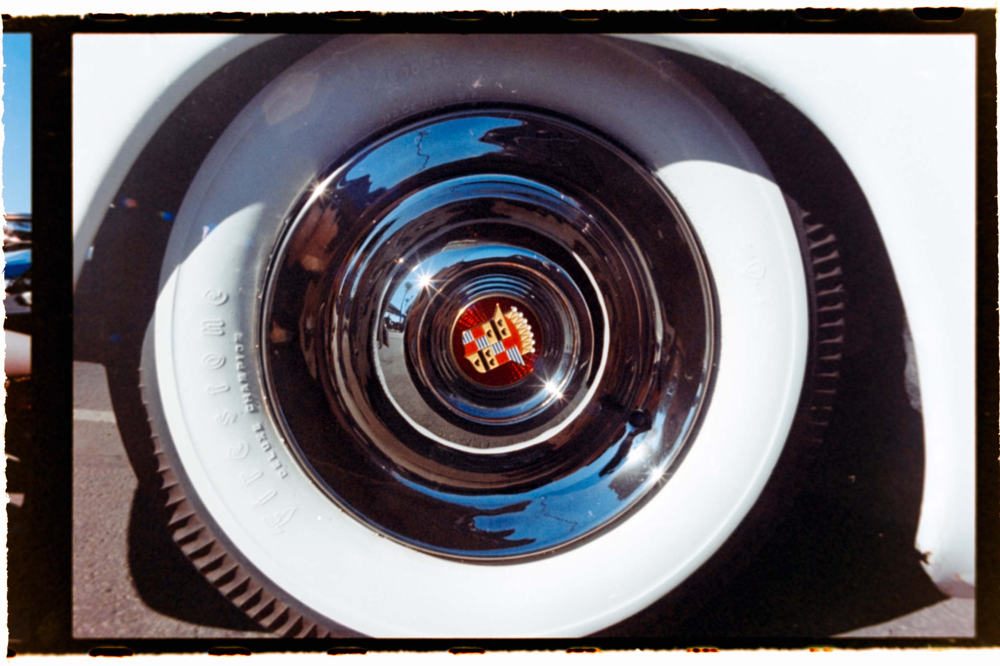
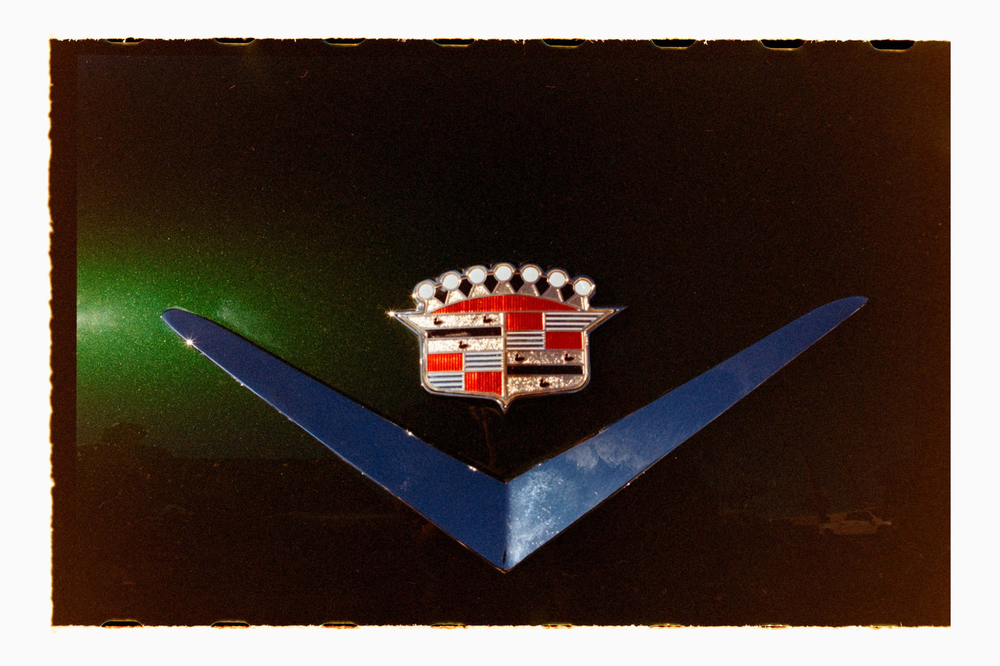
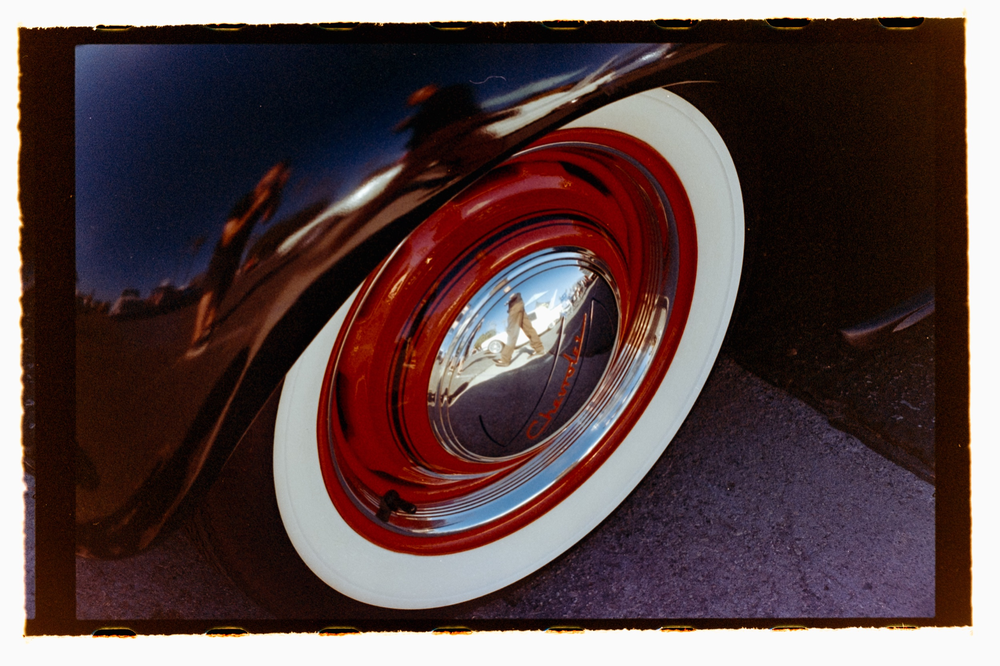

The Irwindale Speedway had always been a low-key myth in my life—a rumbling ghost whose sounds drifted through open windows on warm summer evenings, whispering tales of burnt rubber and spent octane. For years, I didn't even know where the damn thing was, only that it existed out there somewhere, not in my small corner of LA, but close enough to hear—a modern-day coliseum, not close enough to touch, but close enough to haunt.
Sadly, the city of Irwindale has decided to demolish the Speedway and make way for a bleak expanse of beige warehouses built to store other, smaller beige things. As if this part of Irwindale isn't beautiful enough!

A buddy of mine invited me to one of the Speedway's final events—a classic car show called the "Mooneyes Christmas Party", which apparently is, or…now was, an annual event.
I decided to leave my digital camera at home and go full analog, bringing only a film camera. Three rolls of film. No safety net. Just me, a sea of vintage wheels, and the hum of impending doom. Shooting on film felt right—like a nod to the Speedway's spirit, a way to bottle its magic without overdosing on pixels. I developed the film myself later that evening, each image a small act of rebellion against the oncoming tide of warehouses and forklifts.

The event itself was glorious—a kaleidoscope of chrome and steel, roaring engines, and stories baked into rust. I got lost in the details: the curve of a fender, the glint of sunlight on a hood ornament, the smell of fuel mingling with nostalgia, rockabilly, and plenty of Brylcreem (though, not on my head).

Very soon, the roar will fade, the track will crumble, and the Speedway will vanish—another cool, weird, imperfect thing sacrificed on the altar of "progress". But I have those three rolls of film, and somewhere in the grain of those negatives, the Speedway lives on—defiant, roaring, and just a little bit wild.